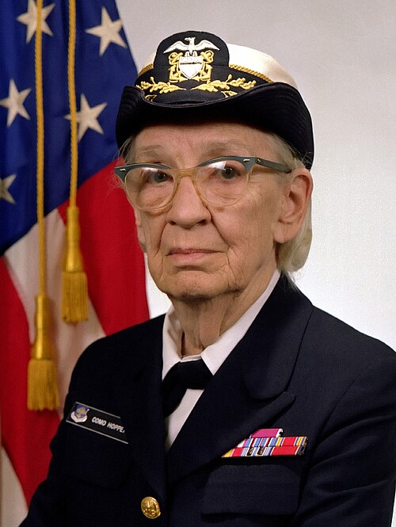

Hopper: A Pioneer Who Changed the World of ComputingGrace Brewster Murray Hopper was born on December 9, 1906, in New York City. Long before computers became a familiar part of everyday life, Hopper developed a fascination with understanding how things worked. Her curiosity was evident from childhood. When she was seven years old, she took apart seven alarm clocks in an attempt to discover how they operated. Although her parents were not necessarily pleased with the experiment, her curiosity and determination would become defining characteristics throughout her life. Hopper was an excellent student with a particular talent for mathematics. She attended the Hartridge School in New Jersey before enrolling at Vassar College. In 1928, she graduated with degrees in mathematics and physics. She continued her education at Yale University, where she earned a master's degree in mathematics in 1930 and a Ph.D. in mathematics in 1934. After completing her doctorate, Hopper returned to Vassar College as a mathematics professor. During this period, she taught students and continued developing her expertise in mathematics. Her academic career might have remained focused on teaching and research, but the events of World War II created an opportunity that would change the direction of her life. In 1943, Hopper joined the United States Navy Reserve. She wanted to contribute to the American war effort and believed her mathematical skills could be useful to the military. After completing training at Smith College, she was assigned to the Bureau of Ships Computation Project at Harvard University. There, Hopper encountered a machine unlike anything she had worked with before: the Harvard Mark I. The enormous electromechanical computer was capable of performing complicated mathematical calculations that would have taken humans considerably longer to complete. Hopper became one of the machine's first programmers. Her experience with the Mark I introduced her to a new field that was still in its infancy. Computers were enormous, expensive, complicated machines, and programming them required highly specialized knowledge. Hopper quickly became interested not only in using computers, but also in finding ways to make them easier for people to program. That interest would eventually lead her from mathematics and military computing into the history of computer science.
Grace Hopper's career was remarkable because it brought together mathematics, computer science, military service, education, and technological innovation. At a time when computing was dominated by large machines and highly technical programming methods, she imagined a future in which computers could be used by a much wider audience. After World War II, Hopper continued working in computing rather than returning permanently to academia. In 1949, she joined the Eckert–Mauchly Computer Corporation, where she worked on UNIVAC I, one of the first commercially available electronic computers. Working with UNIVAC strengthened Hopper's belief that programming needed to become more accessible. Early computers generally required programmers to provide instructions in forms that were difficult for most people to understand. Hopper believed that programmers should be able to write instructions using words and concepts that were closer to ordinary human language. To make this possible, Hopper helped develop one of the earliest compiler systems, known as the A-0 System. A compiler is software that translates instructions written in a higher-level programming language into machine instructions that a computer can execute. This concept is fundamental to modern programming. Hopper's idea was revolutionary because it changed the relationship between people and computers. Instead of requiring every programmer to understand the machine's internal instructions, a compiler could act as a bridge between human language and the computer. She continued developing this idea through FLOW-MATIC, a programming language designed to use English-like commands. Her work demonstrated that computers did not necessarily have to be programmed using complicated mathematical notation or machine code. Hopper's ideas eventually contributed to the development of COBOL, or Common Business-Oriented Language. In the late 1950s, she participated in the work that led to COBOL's creation. The language was designed primarily for business and data-processing applications and was written in a form that was much closer to English than the machine-level languages that came before it. COBOL became enormously influential. Businesses, banks, governments, and other organizations used it to process large amounts of information. Even decades later, COBOL remained important to many major computer systems. For people interested in the history of programming, Hopper's contribution is particularly significant because she helped establish a principle that remains central to computing: technology becomes more powerful when it is made easier for humans to use. Hopper's career also remained closely connected to the military. She continued serving in the Naval Reserve while pursuing her work in computing. She became involved in programming-language standards and worked to encourage consistency among computer systems. As computers became increasingly important to military, government, and business operations, these standards helped make computer programs more reliable and easier to maintain. Her influence extended beyond the technology itself. Hopper was an energetic teacher and speaker who believed strongly in educating the next generation. She frequently encouraged students and young programmers to experiment, take risks, and learn from their mistakes. She understood that technological progress required more than machines—it required people who were willing to imagine what those machines could become. Hopper also became an important figure for women in technology. She built an extraordinary career during a period when women faced significant barriers in mathematics, science, engineering, and the military. Rather than allowing those barriers to define her career, she continued pursuing increasingly challenging positions. Her achievements demonstrated that women could play central roles in the development of technologies that would eventually transform society. Her story therefore belongs not only to the history of computers, but also to the history of women who changed American culture and expanded the possibilities available to future generations.
Grace Hopper's connection to the United States Navy lasted far longer than a typical military career. Although she initially retired from the Naval Reserve in 1966, she was recalled to active duty the following year. She continued working on computer-related projects and remained an important voice in the military's developing relationship with information technology. Over the following years, Hopper continued advancing through the Navy's ranks. She was promoted to captain in 1973. In 1983, she became a commodore, and when the Navy changed the designation of that rank in 1985, she became a rear admiral (lower half). Her continued service was remarkable not only because of her age, but also because of the changing nature of the technology around her. Hopper had entered the computing field when computers were enormous machines occupying large rooms. By the time she retired, computing had advanced dramatically, and computers were becoming increasingly important to businesses, government agencies, universities, and the military. Hopper finally retired from active naval service on August 14, 1986, at the age of 79. Her retirement ceremony aboard the USS Constitution marked the end of an extraordinary military career spanning more than four decades. But retirement did not mean that Hopper stopped working. After leaving the Navy, she became a senior consultant at Digital Equipment Corporation. She continued traveling, speaking, teaching, and encouraging people to become involved in technology. She became especially well known for her ability to explain complicated technological ideas in ways that ordinary audiences could understand. Hopper frequently spoke to students and young professionals about the importance of curiosity and experimentation. She encouraged people not to be afraid of failure and often emphasized that the greatest technological breakthroughs could come from questioning established assumptions. Her later years therefore continued the same theme that had characterized her entire career: keep learning, keep experimenting, and never assume that something cannot be improved simply because it has always been done that way. Grace Hopper died on January 1, 1992, at the age of 85. She was buried with full military honors at Arlington National Cemetery. Her influence, however, continued long after her death. Her work helped establish important foundations of modern programming, particularly through compilers and programming languages such as COBOL. Her military career demonstrated the growing importance of computing to national defense, while her role as a teacher and public speaker inspired generations of people interested in technology. For women entering computing, mathematics, engineering, or the military, Hopper became an especially powerful example. She succeeded in fields where women were often underrepresented and demonstrated that technical expertise, leadership, and creativity could exist together. Grace Hopper's life ultimately connects three worlds that continue to shape modern society: the development of computers, the evolution of the American military, and the growing influence of women in science and technology. Her story is not simply about the machines she programmed. It is about changing the way people thought about computers—and proving that one determined person could help change the direction of an entire field.
The lecture is essentially Hopper looking at the future of computing from the perspective of 1982. She discusses four interconnected subjects: data, hardware, software, and people. One of her most striking observations concerned the continuing growth of information. Hopper argued that the amount of data and information would continue to increase at a rate greater than linear, while people's demand for immediate access to that information would also increase. She recognized that these two trends created a difficult problem: organizations would have more information than ever, but they would also expect to retrieve and use it almost instantly. That observation is remarkably relevant today. Modern organizations deal with enormous databases, cloud storage, artificial intelligence, cybersecurity systems, and constantly increasing streams of digital information. Hopper was already thinking about the problem of managing and accessing huge quantities of information decades before the modern internet and smartphone era.ograms supporting women in technology. More than 30 years after her death, the ideas she promoted—and the opportunities she helped create—continue to influence the technology community.
The Grace Hopper Celebration is a major gathering for people working in, studying, or interested in technology. AnitaB.org describes it as the world's largest gathering of individuals in tech, bringing together thousands of women, leaders, innovators, students, professionals, and allies. Its purpose is to help people learn, build skills, make connections, find career opportunities, and contribute to the future of technology. The event was founded in 1994 by Dr. Anita Borg and Dr. Telle Whitney and was created specifically to honor the legacy of Grace Hopper. Hopper's career made her an appropriate namesake: she was a pioneering computer scientist, mathematician, U.S. Navy officer, and one of the important figures in the development of modern programming. The Celebration therefore isn't simply about remembering Hopper's historical accomplishments. It attempts to continue the ideas she represented—innovation, education, leadership, curiosity, and creating opportunities for people in technology.
For more details, visit GHC 2024